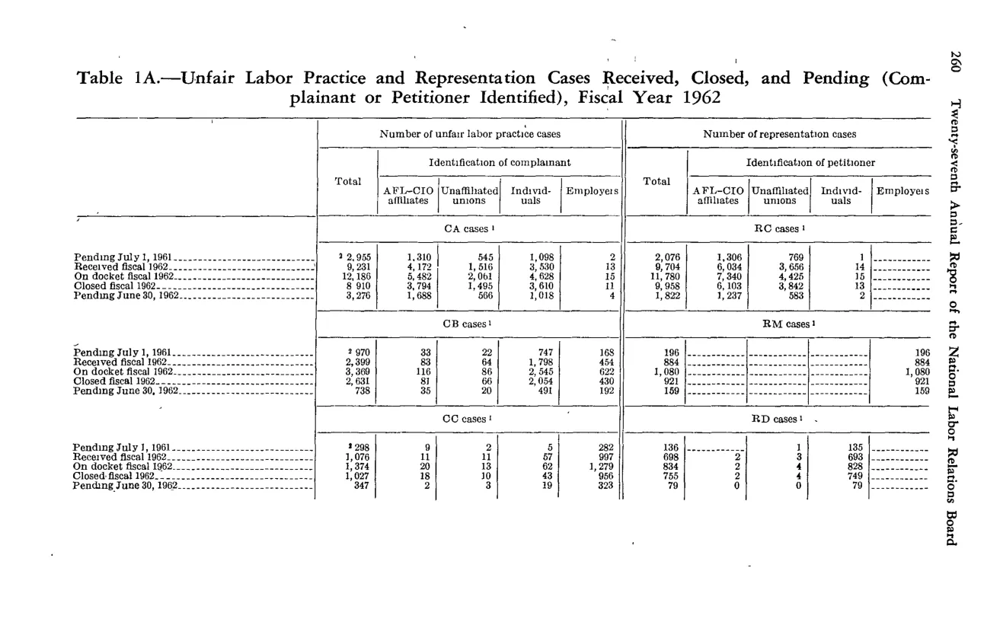
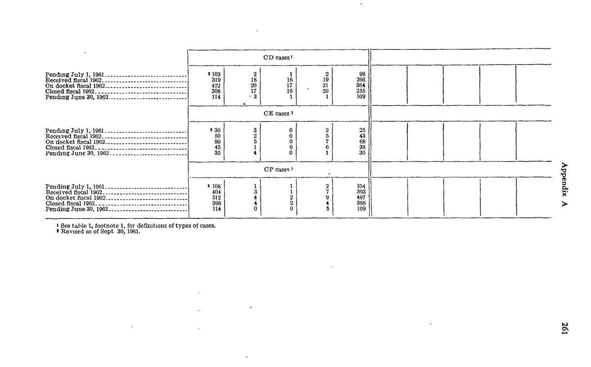

NLRB Stats Archive › Annual Reports › FY1962 › Cases received and disposed of — by case type
Wide table split across pp. 274–275 (columns continue on p.275). The parts below are shown as printed — each keeps its own columns; they are not auto-merged into one grid. Read the parts left-to-right (by page) for the full set of columns.
| Case stage / type | ULP — Total | ULP — AFL-CIO affiliates | ULP — Unaffiliated unions | ULP — Individuals | ULP — Employers | Rep — Total | Rep — AFL-CIO affiliates | Rep — Unaffiliated unions | Rep — Individuals | Rep — Employers |
|---|---|---|---|---|---|---|---|---|---|---|
| [SECTION DIVIDER — CA cases (left side) / RC cases (right side)] | ||||||||||
| Pending July 1, 1961 (CA / RC) | 2,935 | 1,310 | 543 | 1,008 | 2 | 2,075 | 1,206 | 769 | 1 | 99 |
| Received fiscal 1962 (CA / RC) | 9,233 | 4,172 | 1,516 | 3,530 | 15 | 9,704 | 6,034 | 3,656 | 1 | 11 |
| On docket fiscal 1962 (CA / RC) | 12,168 | 5,482 | 2,061 | 4,628 | 15 | 11,782 | 7,240 | 4,425 | 2 | 115 |
| Closed fiscal 1962 (CA / RC) | 8,910 | 3,784 | 1,455 | 3,658 | 13 | 9,960 | 6,103 | 3,842 | 13 | 2 |
| Pending June 30, 1962 (CA / RC) | 3,276 | 1,696 | 606 | 1,018 | 4 | 1,822 | 1,237 | 583 | 2 | |
| [SECTION DIVIDER — CB cases (left) / RM cases (right)] | ||||||||||
| Pending July 1, 1961 (CB / RM) | 970 | 33 | 22 | 747 | 168 | 196 | 196 | |||
| Received fiscal 1962 (CB / RM) | 2,389 | 84 | 65 | 1,786 | 454 | 884 | 884 | |||
| On docket fiscal 1962 (CB / RM) | 3,359 | 118 | 86 | 2,545 | 622 | 1,080 | 1,080 | |||
| Closed fiscal 1962 (CB / RM) | 2,628 | 85 | 56 | 2,034 | 430 | 921 | 921 | |||
| Pending June 30, 1962 (CB / RM) | 728 | 35 | 30 | 491 | 192 | 159 | 159 | |||
| [SECTION DIVIDER — CC cases (left) / RD cases (right)] | ||||||||||
| Pending July 1, 1961 (CC / RD) | 298 | 8 | 5 | 20 | 265 | 135 | 135 | |||
| Received fiscal 1962 (CC / RD) | 1,076 | 11 | 11 | 57 | 997 | 698 | 2 | 3 | 693 | |
| On docket fiscal 1962 (CC / RD) | 1,374 | 19 | 16 | 77 | 1,262 | 833 | 2 | 3 | 828 | |
| Closed fiscal 1962 (CC / RD) | 1,027 | 18 | 13 | 73 | 925 | 755 | 2 | 3 | 750 | |
| Pending June 30, 1962 (CC / RD) | 347 | 1 | 3 | 15 | 328 | 78 | 78 |
| Case stage / type | Total | AFL-CIO affiliates | Unaffiliated unions | Individuals | Employers |
|---|---|---|---|---|---|
| [SECTION DIVIDER — CD cases] | |||||
| Pending July 1, 1961 | 103 | 2 | 1 | 2 | 98 |
| Received fiscal 1962 | 319 | 18 | 16 | 19 | 266 |
| On docket fiscal 1962 | 422 | 20 | 17 | 21 | 364 |
| Closed fiscal 1962 | 308 | 17 | 16 | 20 | 255 |
| Pending June 30, 1962 | 114 | 3 | 1 | 1 | 109 |
| [SECTION DIVIDER — CE cases] | |||||
| Pending July 1, 1961 | 30 | 3 | 0 | 2 | 25 |
| Received fiscal 1962 | 50 | 2 | 0 | 5 | 43 |
| On docket fiscal 1962 | 80 | 5 | 0 | 7 | 68 |
| Closed fiscal 1962 | 45 | 1 | 0 | 6 | 38 |
| Pending June 30, 1962 | 35 | 4 | 0 | 1 | 30 |
| [SECTION DIVIDER — CP cases] | |||||
| Pending July 1, 1961 | 108 | 1 | 1 | 2 | 104 |
| Received fiscal 1962 | 404 | 3 | 1 | 7 | 393 |
| On docket fiscal 1962 | 512 | 4 | 2 | 9 | 497 |
| Closed fiscal 1962 | 398 | 4 | 2 | 4 | 388 |
| Pending June 30, 1962 | 114 | 0 | 0 | 5 | 109 |


Source data: U.S. NLRB Annual Reports (public domain). Reconstruction by NLRB Stats Archive. Verify figures against the source scan. Updated June 2026. · About